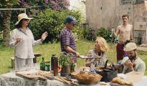

Churrasco

Nada melhor que uma receita para reunir quem a gente mais ama!
"Apesar de controverso, o churrasco pouco tem para mim sobre comer ou alimentar-se. Seus contextos me lembram sempre de reuniões,
boas ou neutras; longas ou breves. É sobre encontrar aquele parente que você já não o vê a muito tempo.
É fofocar sobre as últimas novidades, ficar por dentro da vida dos outros e também compartilhar nossas consquistas e angústias. O churrasco
é para mim, aquele envento que eu não importava na hora, depois me lembrei com carinho e mais tarde fiquei triste por não ter aproveitado mais"-Aline Mika
Rendimento:Quantas pessoas você quiser
Lista de Utensílios:
- Cadeiras (de acordo com a quantidade de pessoas)
Mesas (opicional)
- Decoração (opicional)
- Churrasqueira (opicional)
Ingredientes:
- Pessoas (prefencialmente as que você gosta)
- Comidas (peça para cada pessoa convidade levar um prato)
- Bebidas (a gosto do anfitrião)
- Sobremesas (ver "Bolinhos de Chuva" e "Gelatina Colorida")
- Carnes: de boi, peixe ou ave (opicional)
- Pão de alho (opiconal, porém, altamente recomendado)
Instruções:
- Convide aquela pessoa que você não vê a algum tempo.
- Convide pessoas agradáveis
- Convide pessoas que você gosta
- Peça para que cade um leve pelo menos um prato de comida
- Marque um horário de almoço ou jantar
- Arrume o ambiente para receber as visitas
- Coloque uma música (opicional)
- Acenda a churrasqueira e prepare a carne (opicional)
- Receba os convidados
- Aproveite a festa!
Voltar ao Menu